树（下）
在上一篇博客中介绍了二叉搜索树，对于二叉搜索树，如果树的形状比较接近完美二叉树（下面称之为平衡），就可以有 O(logN) 的插入、删除和查找效率，但是如果输入是一个单调的序列，将导致二叉搜索树退化为链表，效率也变成了 O(N)，这里介绍两种由二叉搜索树衍生而来的树，可以解决二叉搜索树不平衡的问题。
平衡二叉树
平衡二叉树（Balanced Binary Tree），又称为 AVL 树，在满足二叉搜索树的特性以外，还满足任一节点左右子树高度差的绝对值不超过 1，该高度差也定义为该节点的平衡因子（Balance Factor）。通过推导可以得到，其树高为 O(logN)：
对于某一节点，假设以其为根节点的子树高度为 $h$，节点数为 $n_h$（根节点 $h=n_h=1$），假设对于该树，任意节点左右子树的高度差绝对值都为 1（显然此时最不平衡），则其左右子树高度分别为 $h-1$ 和 $h-2$ ，于是我们得到递推公式：
$$n_h=n_{h-1}+n_{h-2}+1$$
只要换元便可得到斐波那契数列的递推式，解得
$$n_h \approx \frac{1}{\sqrt{5}}(\frac{1+\sqrt{5}}{2})^{h+2}-1$$
则有 $h=O(logn)$。
平衡二叉树的操作接口
共有查找、插入和删除三种接口，此时查找显然不会影响 AVL 树的平衡性，而插入和删除操作其实都分为两步，即第一步进行节点的插入和删除，第二步进行失衡后的调整。
平衡二叉树的失衡
当插入或删除节点 n 后，记因 n 的插入或删除而暂时失衡的节点集为 UT(n)，可以证明，对于插入操作，UT(n) 中可能包含多个节点，对于删除操作则只包括一个节点。
平衡二叉树的插入调整
当插入节点使得平衡二叉树失衡后，首先我们需要从 n 向上（从下向上的原因是平衡因子是从下到上更新的），找到第一个失衡的节点（即平衡因子大于 1 的节点），我们称之为失衡的发现者，记作 g，此时显然 g 的辈分大于等于 n 的祖父，如果我们能够解决该子树的平衡问题，即可解决平衡二叉树的平衡问题
平衡二叉树通过旋转的方式来保持平衡，针对不同的插入情况，一共有四种旋转，如下：
- 对 g 的左儿子的左子树进行插入
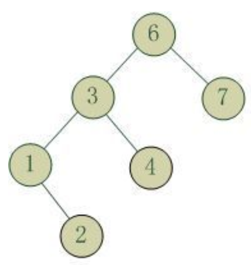
-
对 g 的左儿子的右子树进行插入
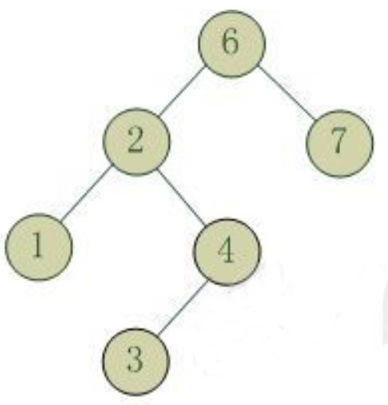
-
对 g 的右儿子的左子树进行插入
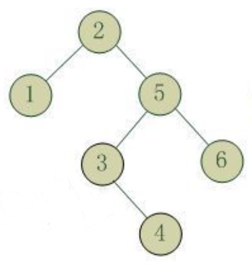
-
对 g 的右儿子的左子树进行插入
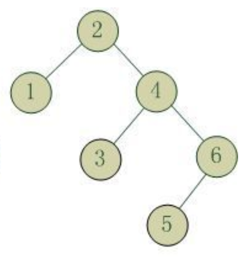
情形 1 和情形 4 是关于 g 的镜像对称，情形 2 和情形 3 也是关于 g 的镜像对称，因此理论上看只有两种情况，但编程的角度看还是四种情形。
对于情形 1 和情形 4，我们称插入发生在树的外边，此时可以采用一次单旋进行调整（LL 旋转或 RR 旋转，也称作右旋和左旋），对于情形 2 和 情形 3，我们称插入发生在树的里边，此时需要采用一次双旋进行调整（LR 旋转 或 RL 旋转）
下面以 RR 旋转（即左旋）和 LR 旋转（即左旋+右旋）为例，介绍旋转方式：
RR 旋转（即左旋）：
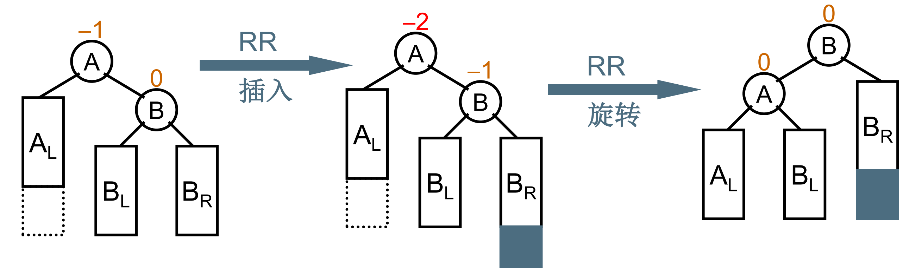
首先记录下 g 的右儿子（称为 r），然后把 g 的右儿子修改为 r 的左儿子，之后将 g 设为 r 的左儿子。
LR 旋转（即左右双旋）
只要复用左单旋和右单旋的代码，首先对失衡节点 g 的左儿子进行左单旋，再对 g 进行右单旋。
如图：
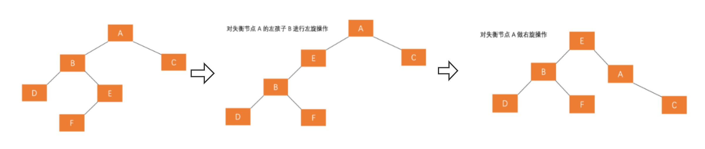
平衡二叉树的删除调整
最终删除的节点会转化为度为 0 的叶子节点，因为删除度为 2 的节点时，我们会转化为删除它的前驱（即左子树中的最大元素）或者后继（即右子树中的最小元素，该节点的度一定为 0 或 1；而删除度为 1 的节点时，我们又可以转化为删除它的儿子，只要递归向下，最后总能找到叶节点儿子。
但是，删除叶节点时，可能会导致某子树不平衡，而通过旋转将该子树调平衡后，可能会导致该子树的高度较原来变小，从而导致需要继续递归地向上进行调整，最坏的情况可能要进行 O(logN) 次的旋转才能使树变得平衡，但由于旋转只是改变常数个指针，因此删除的时间复杂度依然为 O(logN)。
红黑树
AVL 树虽然可以做到在 O(logN) 时间内的查找、插入、和删除，但由于其删除操作的代价较大，且 AVL 树对于每次插入几乎都要进行旋转来维持树的平衡，因此其实际应用并不如我们下面要介绍的红黑树来得广泛。
红黑树简介
红黑树即每个节点带有红色或黑色的二叉搜索树，其通过对任何一条从根到叶子的路径上各个节点着色的方式的限制，确保没有一条路径会比其它路径长出两倍，因此，红黑树是一种弱平衡二叉树（由于是弱平衡，可以看到，在相同的节点情况下，AVL 树的高度低于红黑树），相对于要求严格的 AVL 树来说，它的旋转次数少，所以对于插入，删除操作较多的情况下，我们就用红黑树。
红黑树需要满足如下性质：
红黑树的性质
首先，红黑树需要满足二叉搜索树的性质，此外还要满足下面的性质：
-
节点是红色或黑色（有色性）。
-
根节点是黑色（根黑性）。
-
每个叶子节点（NIL节点）都是黑色的空节点（叶黑性）。
-
每个红色节点的两个子节点都是黑色。(从每个叶子到根的所有路径上不能有两个连续的红色节点)（间隔性，即不会有相邻的红色节点）。
-
从任一节点到其每个叶子的所有路径都包含相同数目的黑色节点（近平衡）。
这五条性质确保了红黑树 没有一条路径会比其它路径长出两倍 这一性质。
注意，第三条性质中的叶子节点是 NIL 节点，也即空节点（在 C++ 中用 nullptr 表示），不是通常指的左右儿子为空的叶节点。
可以证明，对于一棵有 N 个节点的红黑树，其树高为 $h=O(logN)$。
下面分别介绍红黑树具体功能的实现。
红黑树的插入
不论是插入还是删除，都是先找到目标位置，然后进行插入和删除操作，最后看是否需要进行插入和删除后的调整，以维护红黑树的平衡。
红黑树的调整都涉及变色和旋转两种操作，变色即节点颜色域的修改，容易理解，而旋转其实和 AVL 树的旋转相同，即围绕某一节点进行左旋或者右旋。
红黑树的旋转
关于 g 的左旋：
此时记 p 为 g 的右儿子，把 g 的右儿子修改为 p 的左儿子，再把 g 设为 p 的右儿子即可（此时 p 成为旋转节点的父节点），如图：
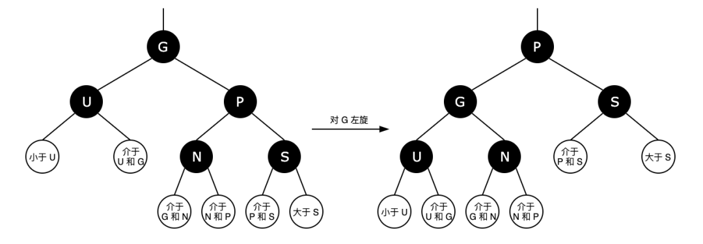
关于 g 的右旋：
右旋和左旋完全对称，此时记 p 为 g 的左儿子，把 g 的左儿子修改为 p 的右儿子，再把 g 设为 p 的左儿子即可（此时 p 成为旋转节点的父节点），如图：
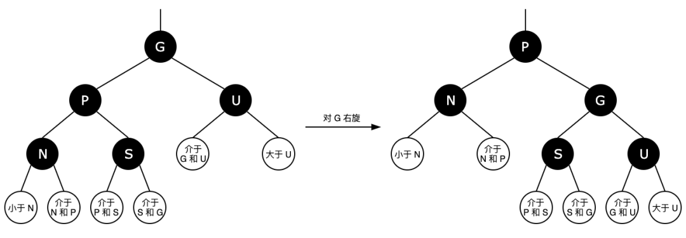
插入
为了方便描述，先为几个节点取个别名：
n-node：当前结点（即待插入的节点）
p-parent：n 的父结点
s-sibling：n 的兄弟结点
u-uncle：n 的叔父结点(p 的兄弟结点)
g-grandparent：n 的祖父结点(p 的父结点)
第一步，检查树是否为空，如果树为空，将该节点设为黑色（根黑性），并初始化为树的根节点，算法结束，如果不为空，进入第二步。
第二步，把待插入节点设为红色。
设成红色是因为黑色节点的数目在红黑树中是很重要的一个参数，对于红黑树的每个节点 x，有阶（rank）或黑色高度（black height）的定义：即从 x 到 NIL 节点路径上黑色节点的数目（不含 x），显然对于 NIL 节点，其阶为 0，其他节点阶均大于等于 1。
如果我们把待插节点设为黑色，将导致某条路径黑色节点数比其他路径多 1，后续很难进行调整（近平衡性很难满足）。
第三步，按照 BST 的插入算法，将待插节点插入树中。
如果此时该节点的父节点是黑色，算法结束。
如果是红色，将不满足间隔性，下面进行插入后的调整：
此时根据 n 的叔父节点 u（一定存在叔父节点，因为红色节点不为根节点，且红黑树的叶子节点是 NIL，这保证了每个非空节点都有两个子节点）的颜色，分为两种情况：
-
u 为黑色
此时可以进行旋转，依据 n 插入的位置相对于 g 的位置，进行旋转，共有四种情况，由于对称性，不妨设 p 为 g 的左儿子，则有两种情况：
1.1 n 插在 p 的左子树上（LL 插入），此时只要对 g 进行右旋（如果是 RR 插入则是对 g 进行左旋），再交换 g 和 p 的颜色（也即把 p 置为黑色，g 置为红色）如图：
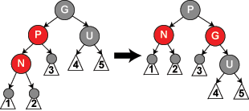
1.2 n 插在 p 的右子树上（LR 插入），该情形可以转化为 1.1：只要对 p 左旋即可，如图：
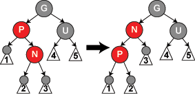
-
u 为红色
首先进行变色操作：将 p 和 u 变为黑色，g 变为红色，如图：
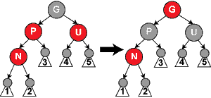
此时对该子树（以 g 为根)已经调整完毕，但注意到 g 的父亲可能为红色，因此需要向上递归地检查：把 g 当作 n 即可，该步骤可能会进行多次，但该过程只涉及染色，不涉及旋转，该过程直到 n 的父亲不为红色为止，此时有两种情况：如果 n 的父亲为空，那么把 n 重新染为黑色即可。
总结：
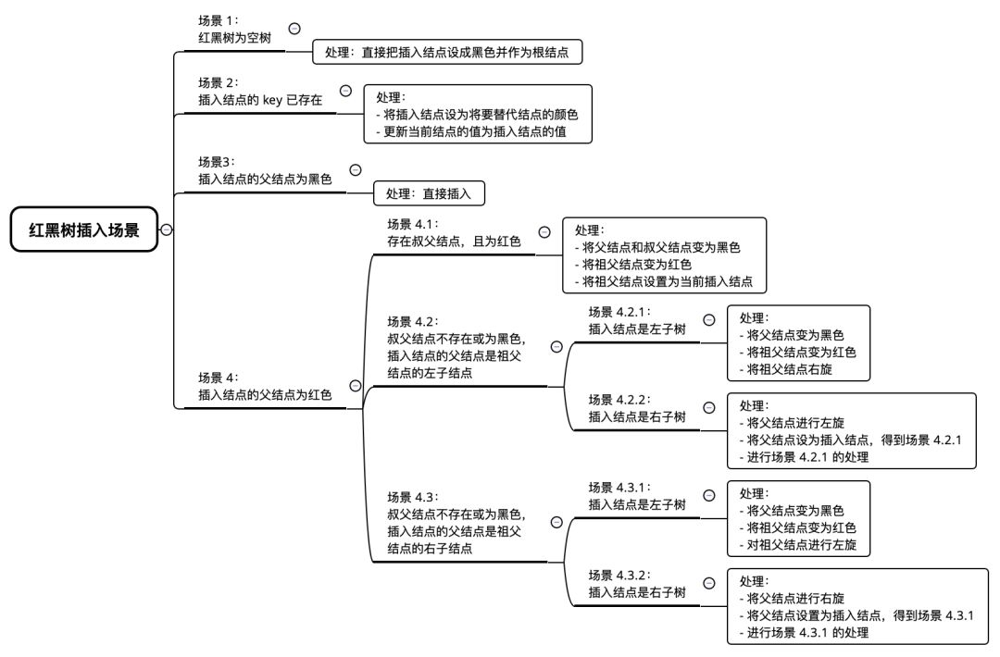
其中场景 4.3 与场景 4.2 是对称的，在本文中只介绍了 4.2 的处理方法。
案例：
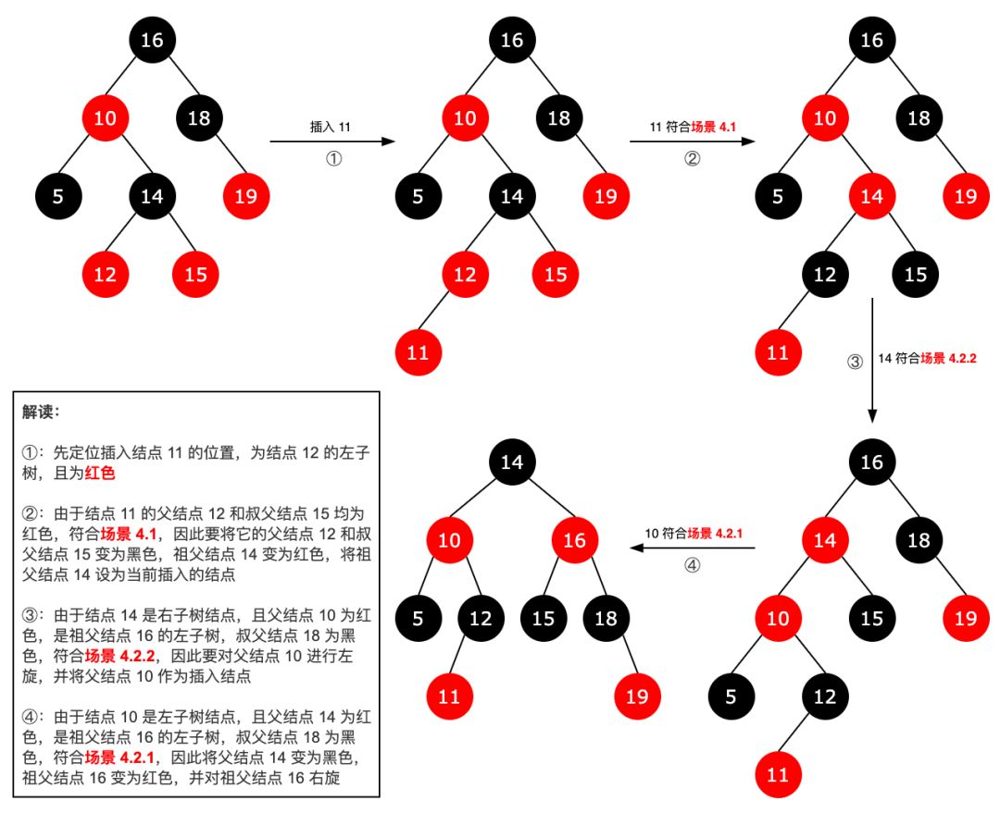
注：插入过程中，不会进行超过两次旋转。
红黑树的删除
类似 AVL 树，首先需要定位待删除节点，称为 n，之后分三种情况：
情形 1：待删除节点度为 0。
情形 2：待删除节点度为 1。
情形 3：待删除节点度为 2。
如果是情形 3，此时我们用其前驱或后继代替该节点（复制数据），为了方便，将代替节点记作 r，我们把 n 和 r 进行交换（注意，这里只交换数据，不交换颜色），之后递归删除 r 即可。而 r 必定属于情形 1 或情形 2（因为如果是前驱，右儿子一定空，后继类似）。
由此，删除节点 n 可以看作删除 r（即替换节点）
删除后的调整
对节点 r 的颜色进行讨论：
-
替换节点 r 为红色
此时显然其两个儿子都是黑色的，又由于其满足情形 1 或 2，因此两个儿子都是 NIL，无需调整，直接将其删除即可。
-
替换节点 r 为黑色
2.1：如果其有红色儿子，那么必定有且仅有一个，否则由于红色节点是内部节点（非空），r 会有两非空子树，就不属于情形 1 或 2 了，与我们之前的结论矛盾。该情形也比较简单，只要用它的红色儿子代替它，并将该儿子修改为黑色即可。
2.2：如果没有红色儿子，也即两个儿子都是黑色（显然这两个儿子都是 NIL），此时比较麻烦，因为需要向其兄弟或叔父等借节点，下面着重讨论：
为了方便，同样对节点命名：
p-parent：r 的父结点
s-sibling：r 的兄弟结点
sl：s 的左儿子结点，称为 r 的近侄子节点
sr：s 的右儿子，即 r 的远侄子节点
同时约定，下面用 NIL 指代外部节点，用叶子指代实际存在的内部节点，下面的灰色节点表示可能为红色，也可能为黑色。
下面又有多种情形（以下都假设 r 为 p 的左儿子）：
2.2.1：s 为红色，此时显然 p 只能为黑色，如图：
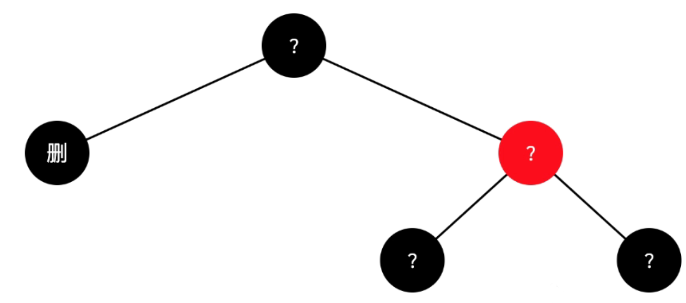
由于原黑高相等，因此 sl 和 sr 为两个黑色叶子。
此时首先交换 p 和 s 的颜色，之后再对 p 左旋，得到下面的 2.2.2.2，2.2.3，2.2.4 中的一种。
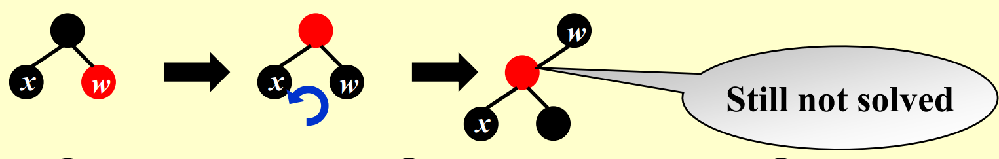
2.2.2：s 为黑色，sl 和 sr 为空
2.2.2.1：p 为黑色，如图：
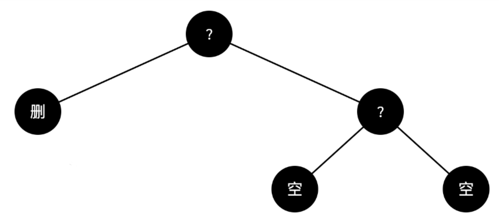
此时该子树已经没有节点可以借，只能删除 r，并将 s 染成红色，这样整个子树的黑色高度会减小 1，此时需要将 p 作为需要调整的节点，称为 x，继续进行调整（即找 p 的兄弟借节点，通过旋转来维持平衡），如果 x 的兄弟 u 仍然是黑色，需要继续把 u 染成红色，然后调整 x 的父亲，一直往上，直到 x 变为根节点（此时不必再调整），或者 x 的兄弟变为红色节点，变成下面的 2.2.3 或
2.2.4。
2.2.2.2：p 为红色，如图：
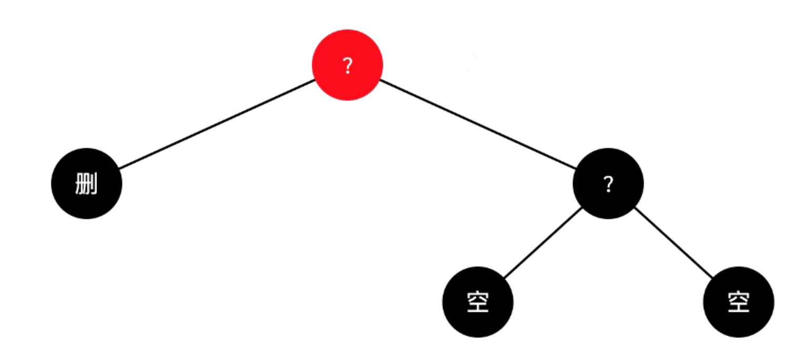
此时只要交换 p 和 s 的颜色即可。
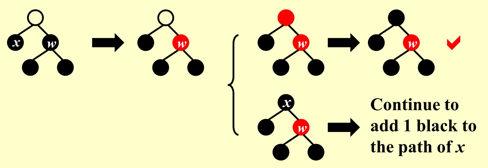
2.2.3：s 为黑色，sl 为红色，sr 为黑色，如图：
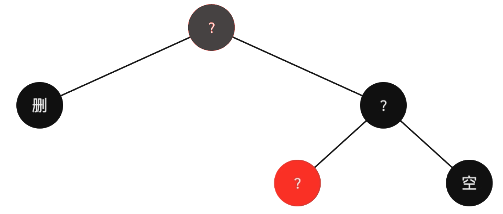
此时首先交换 s 和 sl 的颜色，之后对 s 进行右旋，得到 2.2.4。
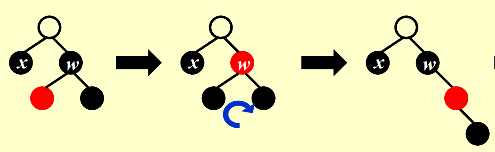
2.2.4：s 为黑色，sr 为红色，如图：
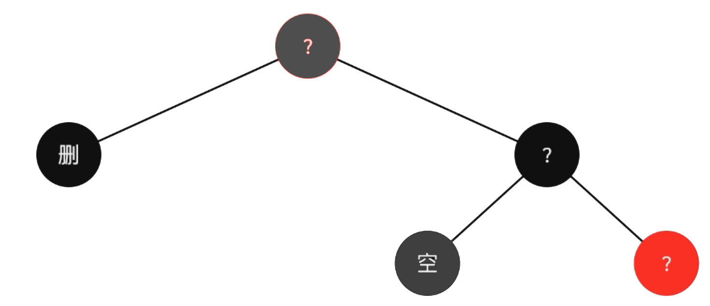
首先，将 s 染色为 p 的颜色，之后把 p 和 sr 都染为黑色，再对 p 进行左旋，即可。
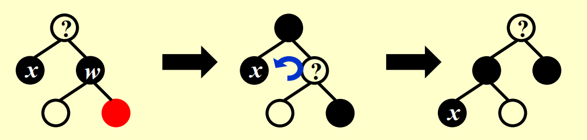
参考资料
什么是红黑树？这篇讲解很全面！_weixin_39777213的博客-CSDN博客
平衡二叉树详解 - zhangbaochong - 博客园 (cnblogs.com)
浙江大学《数据结构与算法》慕课 PPT。